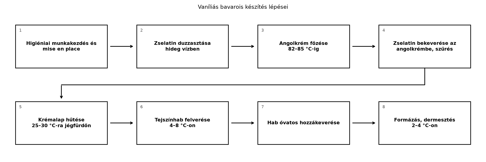

Egy cukrászüzemben a krémes, tejszínes, mousse-alapú termékek a legérzékenyebb készítmények közé tartoznak. Ha a tejszínhab nem elég stabil, a torta oldala a hűtőben lecsúszik. Ha a bavarois nem dermed meg, a szelet kifolyik a formából. Ha a mousse-t rossz hőmérsékleten kevered, elveszíti a levegőt, és tömör, étkezési élményben szegény réteg lesz belőle. Ebben az alfejezetben a hideg krémek rendszerét tanulod meg: a tejszínhabtól a zselatinos bavarois-n át a csokoládé-mousse-ig és a felvert ganache-ig.
Képzelj el egy mousse-tortát hűtve, felszeletelés előtt. A tortakarika oldalán látszanak a rétegek: alul vékony felvert tésztalap, fölötte könnyű, levegős bavarois vagy csokoládé-mousse, benne gyümölcszselé-betét, a tetején vékony tükörbevonó. Kiemeléskor a mousse nem folyik le, vágáskor a kés nyoma tiszta. Ha a hűtési lánc vagy a zselatin adagolása hibás, ugyanez a torta kifolyna, vagy gumis, rágós lenne. A tejszínkrémek és mousse-ok tehát anyagismereti és hőmérséklet-illesztési tudást egyszerre igényelnek.
Az ábra bal felső képe a kész torta metszetét mutatja számozott rétegekkel, a többi kép az összeállítást tortakarikában, acetátcsíkkal: tésztalap, a mousse egy része a lapra és a falra, az előre fagyasztott betét, a maradék mousse, végül dermesztés és bevonás (a tükörbevonót fagyasztott tortára öntjük, lásd Bevonómassza, zselék, áthúzó ganache és tükörbevonó).
Definíció. Tejszínkrém:
A tejszínkrém alapja a felvert habtejszín, amelyet ízesítenek,
édesítenek, és gyakran zselatinnal vagy kényelmi habstabilizálóval
tesznek formázhatóvá, szeletelhetővé.
Definíció. Bavarois:
A bavarois olyan hideg krém, amelynek alapja főzött angolkrém. Az
angolkrémbe zselatint oldunk, majd a kihűtött, de még folyós krémet
felvert tejszínhabbal lazítjuk. A tojássárgáját itt mindig
hőkezeljük.
Definíció. Mousse:
A mousse habokkal lazított, könnyű, levegős hideg krém. Készülhet
gyümölcspüréből, csokoládéból, tejszínhabból, hőkezelt tojáshabbal,
esetleg sajtból vagy savanyított tejtermékből. A mousse lehet
zselatinnal dermedő vagy félig folyó állagú.
Definíció. Felvert ganache:
A felvert ganache csokoládé és tejszín emulziója, amelyet hűtve
habosítunk. Az eredmény selymes, de könnyebb krém, mint a csokoládé
önmagában.
| Készítmény | Alap | Lazítás | Stabilizálás jellemzően | Felhasználás |
|---|---|---|---|---|
| Tejszínkrém | habtejszín | mechanikai habosítás | zselatin vagy habfixáló | töltés, díszítés |
| Bavarois | angolkrém | tejszínhab | zselatin | formázott desszert, tortatöltés |
| Gyümölcs-mousse | gyümölcspüré vagy angolkrém | tejszínhab | zselatin,pektin | pohárkrém, torta, szelet |
| Csokoládé-mousse | ganache vagy csokoládéalap | tejszínhab vagy hőkezelt tojáshab | étcsokoládé zsírja, zselatin | torta, desszert |
| Felvert ganache | csokoládé + tejszín | habosítás hűtve | csokoládé-kakaóvaj-kristályok | tortatöltés, habos bevonat |
Higiénia.
Nyers tojást tartalmazó mousse-t vendéglátói forgalomra ne készíts. A
tojásos alapot hőkezeljük (angolkrém 82–85 °C-ig, ellenőrizendő: üzemi
hőkezelési előírás), vagy pasztőrözött tojásterméket használj. A
tejszínes, krémes termék a HACCP szerint hűtést igénylő, kényes
élelmiszer.
A tejszínhab a tejszín zsírjára épülő hab. A legalább 30% zsírtartalmú habtejszín zsírgolyói a verés során levegőt zárnak be. A hideg hőmérséklet segít, hogy a zsír ne olvadjon meg, és a hab ne csapódjon ki vajjá.
Szabály.
A stabil tejszínhabhoz legalább 30% zsírtartalmú tejszín, 4–8 °C
hőmérséklet, tiszta, hideg edény és hideg habverőfej kell. A tejszínt
előzetesen 0–5 °C-on tárold (ellenőrizendő: hatályos
hideglánc-útmutató).
A tejszínhab készítése:
Hiba.
A túlvert tejszínhab szemcsés lesz, fénytelen, majd sárgás vajmorzsák és
átlátszó savó válik ki. Ezt javítani nem lehet; a szétvert anyagot csak
más célra, például süteménybe dolgozva használd, de friss habként ne
tálald.
Tilos.
A felolvadt, meleg tejszínhabot visszahűtve újraverni, vagy a szétvert
vajas-savós anyagot friss tejszínhabhoz keverni. Az állott hab a
mikrobák számára is kiváló közeg.
A zselatin nem keverhető forrón a hideg habba, mert a melegtől a hab összeesik. Hidegen pedig a zselatinoldat azonnal megdermed, és szálak, csomók képződnek. Ezért szükséges a hőmérséklet-illesztés.
Szabály.
A zselatint ötszörös mennyiségű hideg vízzel 10–15 perc alatt duzzaszd.
A megduzzadt zselatint legfeljebb 50–60 °C-ra melegítsd, amíg teljesen
feloldódik. Forralni tilos, mert a zselatin gélereje romlik. A feloldott
zselatint hűtsd 30–35 °C-ra, és vékony sugárban, folyamatosan keverve
add a félkemény tejszínhabhoz.
A kényelmi habstabilizálók, habfixálók és hidegen oldódó zselatinkészítmények helyettesíthetik a hagyományos zselatint. Mindig a gyártó adagolását és bekeverési hőmérsékletét kövesd, mert a termékek eltérő összetételűek.
Habfúvó higiéniája.
A habfúvó fejét, tömlőjét, szelepét és a tejszíntartályát minden nap,
minden töltésváltásnál bontsd szét, mosd el, öblítsd, fertőtlenítsd és
szárítsd meg. A maradék tejszín a gépben savanyodik, keserű lesz,
biofilmet képez, és a következő tételt is beszennyezi. Ez a műveletsor a
Tésztanyújtó, fondángép, habfúvó, temperálógép és
krémfőző alfejezetben tanult gépi higiéniai elv.
Definíció. Az angolkrém (crème anglaise) tejből (vagy tej–tejszínből), tojássárgájából és cukorból, keményítő nélkül főzött, híg, mártásszerű krém. Folyamatos keverés mellett 82–85 °C-ig hevítjük (rózsára főzés: a kanál hátán húzott csík megmarad), forralni nem szabad, mert a sárgája kicsapódik (ellenőrizendő: üzemi HACCP).
A bavarois alapja az angolkrém. A Tojáskrémek I: főzött sárgakrém és vaníliakrém alfejezetben tanult hőkezelési és hűtési elvek itt is érvényesek, de az angolkrém keményítőt nem tartalmaz, és – a keményítős sárgakrémmel ellentétben – nem forralható. Az angolkrémet 82–85 °C-ra hevítjük, hogy a tojássárgája besűrűsödjön, de a tojás ne csapódjon ki. A maghőmérsékletet hőmérővel ellenőrizd.
Szabály.
A bavarois akkor jó, ha a zselatin teljesen feloldódik, a krémalap 25–30
°C-ra hűl, és a felvert tejszínhabot utolsó lépésben, óvatosan keverjük
hozzá. A hideg alap korán dermedni kezd, ezért a formázást azonnal el
kell végezni.
A bavarois készítésének kulcsmozzanata a hajtogatás: először a tejszínhab egyharmadát keverd a krémalaphoz, hogy fellazítsd. Utána a maradék habot két részletben, alulról felfelé fordító mozdulatokkal dolgozd bele. A habot nem szabad erősen keverni, mert a levegő távozik.
A gyümölcsös mousse készülhet gyümölcspüréből, cukorból, citromléből, zselatinból és tejszínhabból. A gyümölcssav miatt a zselatin hatását kóstolással és próbadermesztéssel ellenőrizni kell. Savas gyümölcsökhöz néha több zselatin kell, mint a tejes alapú krémekhez (ellenőrizendő: gyártói adatlap).
A csokoládé-mousse biztonságos változata például:
A felvert ganache hasonló elven készül, de kevesebb, jól hűthető emulziót használunk, és a csokoládé–tejszín arányt úgy választjuk meg, hogy a krém hűtve habosítható legyen.
Szabály.
A ganache emulziója 30–35 °C körül stabil. A túl forró vagy túl hideg
tejszín, illetve a hirtelen vízcsepp a masszát szemcséssé, kicsapódottá
teheti. A felvert ganache-t rövid ideig, alacsony fordulaton habosítsd,
hogy megtartsa a selymes állagot.
Példa arányok, tanulási alapanyagokkal
(ellenőrizendő: pontos termékjellemzők és gyártói adatlap):
- Étcsokoládé-mousse: 120 g 35%-os tejszínt melegíts, öntsd 100 g
aprított étcsokoládéra, emulgeálj, hűts 30 °C-ra, majd hajtogasd hozzá
180 g felvert tejszínt.
- Fehér csokoládé-ganache: 100 g fehér csokoládé, 100 g tejszín, 12 g
glükózszirup; hűtve, rövid habosítással formázható krém.
Számítás. A technológiai lap 8 adagos
bavarois-mennyiségeit 12 adagra növeljük.
Adott:
,
.
Keresett: a szorzószám
.
A mennyiségeket ezzel a szorzóval növeljük.
| Nyersanyag | 8 adag (g) | Szorzó | 12 adag (g) |
|---|---|---|---|
| Tej, 3,2% | 300 | 1,5 | 450 |
| Tojássárgája | 80 | 1,5 | 120 |
| Kristálycukor | 90 | 1,5 | 135 |
| Habtejszín, 35% | 350 | 1,5 | 525 |
| Zselatinpor, 200 Bloom | 8 | 1,5 | 12 |
| Hideg víz zselatinhoz | 40 | 1,5 | 60 |
| Összesen | 868 | 1,5 | 1302 |
Ellenőrzés: . ∎
Számítás. A recept 8 g 200 Bloom-os zselatint ír
elő, de csak 160 Bloom-os zselatin van raktáron.
Adott:
,
,
.
Keresett: a szükséges 160 Bloom-os zselatin tömege
.
Összefüggés a korábbi Zselésítő és sűrítő anyagok,
mesterséges édesítőszerek alapján:
(közelítő gyakorlati szabály, ellenőrizendő: gyártói adatlap; a végleges mennyiséget próbadermesztéssel állítjuk be)
Behelyettesítés:
Ellenőrzés: a gyengébb zselatinból több kell. A duzzasztóvíz a zselatin ötszöröse: hideg víz. A (hibás) lineáris arány 10 g-ot adna, ami kb. 12%-kal több. ∎
Jogszabály.
A tejszínes, krémes, mousse-alapú készítmények a 852/2004/EK rendelet
(élelmiszer-higiénia) szerint HACCP-alapú eljárást igényelnek. A tejszín
és a tojás allergén jelölését az 1169/2011/EU rendelet (fogyasztók
tájékoztatása) alapján kell elvégezni. A habstabilizálók és zselatin
adalékanyag-felhasználásánál az 1333/2008/EK rendelet és a Magyar
Élelmiszerkönyv vonatkozó előírásai irányadók. A nyomon követhetőséghez
a 178/2002/EK rendelet szerinti tételazonosíthatóságot fenn kell
tartani. (Ellenőrizendő: az adott adalékanyag aktuális használati
feltételei és a hidegláncra vonatkozó hatályos útmutatók.)
Cél. Készíts el egy vaníliás bavarois-t 8 adagos formában, majd ellenőrizd a dermedést, a tömegét és az állagát.
Eszközök, anyagok. Lábas, fémtál, habverő, szilikon spatula, szűrő, hőmérő, digitális mérleg, jégfürdő, 8 forma vagy poharak, hűtőszekrény.
Higiéniai munkakezdés.
Munkaruha, hajháló, ékszer nélkül dolgozz. Kezet moss, a felületet és az
eszközöket fertőtlenítsd. A tejet, tejszínt, tojást hűtve tárolt,
azonosítható tételből vedd ki. A tojást törés előtt tiszta,
repedésmentes, friss állapotúra ellenőrizd.
Biztonsági korlát.
Ha habfúvót használsz, a gépi művelet tanműhelyi vagy üzemi
környezetben, oktatás után és felügyelet mellett végezhető; otthon kis
adagban háztartási habverővel gyakorolj. A habfúvó tisztításához előbb
áramtalaníts, és várd meg a teljes leállást.
Technológiai lap.
| Nyersanyag | Mennyiség (g) | Megjegyzés |
|---|---|---|
| Tej, 3,2% | 300 | hűtött |
| Tojássárgája | 80 | grammban mérve, kb. 4–5 db közepes tojás sárgája |
| Kristálycukor | 90 | finom |
| Habtejszín, 35% | 350 | 4–8 °C-ra hűtve |
| Zselatinpor, 200 Bloom | 8 | hideg vízben duzzasztva |
| Hideg víz | 40 | zselatin duzzasztásához |
| Vaníliarúd | 0,5 db | kikapart mag |
| Összesen | 868 | kb. 8 adag |

| Lépés | Veszély | Megelőzés | Kritikus határ (példa, jelölve) | Monitorozás | Helyesbítő tevékenység |
|---|---|---|---|---|---|
| Nyersanyagátvétel, hűtött tárolás | mikrobaszaporodás | hűtött szállítás, számla, tételazonosítás | 0–5 °C tej/tejszín; jelölés ép | hőmérő, szemrevételezés, nyomon követési napló | meleg árut visszaküldés, tétel lefagyasztása tilos |
| Angolkrém főzés | tojásból Salmonella | maghőmérséklet és keverés | 82–85 °C (ellenőrizendő) | maghőmérő, keverés ellenőrzése | tovább hevítés, ha nem érte el; kicsapódott tétel selejt |
| Krémalap hűtése | spórás és toxinogén baktériumok szaporodása | jégfürdő, sekély edény, keverés | 25–30 °C-ig gyorsan, majd 5 °C alá (ellenőrizendő: hűtési idő) | hőmérő, óra, hűtési napló | gyorsabb hűtés; túl hosszan meleg tétel selejt |
| Tejszínhab-felverés | keresztszennyezés, eszközből biofilm | bontott, fertőtlenített habfúvó, tiszta eszközök | hab hőmérséklete 4–8 °C; eszköz bontott | ellenőrző lista, hőmérő | gyanús, savanyú tejszín selejt; eszközt fertőtleníteni |
| Formázás, dermesztés, tárolás | utólagos szennyezés, hőmérsékleti lánc megszakadása | fedett tárolás, 2–4 °C | 2–4 °C, fogyaszthatósági idő (ellenőrizendő) | hűtő hőmérő, címke, napló | hűtőhibánál termék áthelyezése vagy selejt |
A bavarois és mousse minőségét érzékszervileg és méréssel ellenőrizd. A termék tömege a kitöltött forma vagy pohár szerint legyen egyenletes. A bavarois felülete legyen sima, fényes, nem nyálkás. A pohárkrémet enyhén rázva a massza remeghet, de nem folyhat. Vágás után a mousse szerkezete finoman, egyenletesen levegős, nem szivacsos, nem gumis. Ízben a tejszín, a vanília vagy a gyümölcs tiszta, idegen savanyú utóíz nélkül. A tejszínhabnak friss tejszínillata van, nem érezhető avas vagy penészes szag.
| Tünet | Ok | Megelőzés, javítás |
|---|---|---|
| A tejszínhab szemcsés, savó válik le | túlverés, túl meleg tejszín | 4–8 °C-on, lassú fokozaton verj; túlvert tételt ne tálalj friss habként |
| A bavarois folyik a formából | kevés zselatin, meleg krémalaphoz kevert tejszín | zselatin mennyiséget számold és mérd; az alap 25–30 °C legyen |
| Zselatinszálak, gumós részek | a zselatin hidegen, oldatlanul került a krémbe | a duzzasztott zselatint 50–60 °C-on oldd, majd szűrd |
| A ganache szemcsés, fénytelen | vízcsepp, hőmérsékleti sokk, gyors hűtés | emulgeálj 30–35 °C-on, ne engedj vizet a masszába; melegítsd kis részletben |
| A mousse összeesik, tömör | a tejszínhabot erősen keverték, az alap túl meleg volt | óvatosan hajtogasd; a habot félkeményre verd |
Egy cukrászda szombatra 60 szeletes málna-mousse tortát vállal. Pénteken a konyha elkészíti a gyümölcspüré-alapot, hőkezelést követően jégfürdőn 28 °C-ra hűti, majd hozzákeveri a zselatinos alapot és a felvert tejszínt. A hűtő hőmérője 4 °C-ot mutat, de a nap folyamán többször nyitják az ajtót. A műszak végén a dolgozó a maghőmérőt a torta közepébe szúrja: 7 °C-ot lát. A torta nem érte el biztonságosan a dermedési hőfokot. A dolgozó a hűtési naplóba rögzíti az eltérést (időpont, 7 °C maghőmérséklet); a vezető a HACCP-terv szerinti idő–hőmérséklet határ alapján dönt (ellenőrizendő: üzemi HACCP-terv): ha a torta a megengedett időn belül volt 5 °C fölött, a leghidegebb hűtőtérben visszahűtik, a fogyaszthatósági idő az eredeti gyártási időponthoz kötött marad, és nem hosszabbítható; ha nem igazolható, selejtezik. Itt a naplóból igazolható volt, hogy az eltérés rövid ideig tartott, ezért a tortát visszahűtötték. Másnap szállítás előtt a maghőmérséklet 3 °C, a fedélzeti hűtőtáska 2 °C. A tanulság: a tejszínes mousse-nál a hűtési lánc nem formális adminisztráció, hanem a termékbiztonság feltétele.
1. feladat (A)
Definiáld röviden a bavarois-t, a mousse-t és a felvert ganache-t. Mi a
közös bennük, és miben térnek el?
2. feladat (A)
Egy zselatinos tejszínkrémhez 6 g zselatinport használunk. Mennyi hideg
vizet mérjünk ki ötszörös duzzasztáshoz? Mennyi lesz a duzzasztott
zselatin tömege, ha a zselatin az összes vizet felveszi?
3. feladat (B)
A technológiai lap 12 adagos mennyiségei: tej 450 g, tojássárgája 120 g,
cukor 135 g, habtejszín 525 g, zselatinpor 12 g, víz 60 g. Számítsd ki a
22 adagos mennyiségeket.
4. feladat (B)
Egy recept 12 g 180 Bloom-os zselatint ír elő. A raktáron 240 Bloom-os
zselatin van. Mennyit kell bemérni belőle?
5. feladat (C)
Egy csokoládé-mousse nyersanyagai jók, de a kész termék 4 óra dermesztés
után is folyik a formából. Adj meg legalább három lehetséges okot, és
mindegyikhez írd le, hogyan ellenőriznéd.
6. feladat (D)
Készítsd el a technológiai lap szerint a 8 adagos vaníliás bavarois-t.
Mérd a főzési maghőmérsékletet, a hűtési hőmérsékletet, a formázás utáni
tömegeket, és töltsd ki a technológiai lapot. Értékeld a terméket a
Minőségellenőrzés szempontjai alapján. Ez a gyakorlat előkészíti a Tejszínes sütemények és hagyományőrző tejszínes
termékek és a Nemzetközi tészták, töltelékek és
betétek alfejezetekben tanult tölteni való hideg krémek
alkalmazását.
Önellenőrzés – válaszok
1. feladat – megoldás
A bavarois angolkrémből, zselatinból és tejszínhabból készül. A mousse
gyümölcspüréből, csokoládéból vagy más alapból, habbal lazítva készül. A
felvert ganache csokoládé és tejszín emulziója, hűtve habosítva. Közös:
mind hideg, levegős krém. Eltér: a bavarois alapja főzött tojáskrém, a
mousse alapja változatos, a felvert ganache alapja csokoládé-tejszín
emulzió.
2. feladat – megoldás
Adott:
,
duzzasztási arány 1:5.
Keresett: a víz tömege és a duzzasztott tömeg.
A gyakorlatban a zselatin nem mindig szívja fel teljesen a vizet, ezért a bemérést és a felhasználást az üstben együtt számold. ∎
3. feladat – megoldás
Adott:
12 adagra,
,
.
Keresett: a szorzószám és a 22 adagos mennyiségek.
Szorzó: , gyakorlatilag 1,8333.
| Nyersanyag | 12 adag (g) | 22 adag (g) |
|---|---|---|
| Tej | 450 | 825 |
| Tojássárgája | 120 | 220 |
| Cukor | 135 | 248 |
| Habtejszín | 525 | 963 |
| Zselatin | 12 | 22 |
| Víz | 60 | 110 |
| Összesen | 1302 | 2388 |
Ellenőrzés: ; a tételenként kerekített összeg 2388 g. A tényleges üzemi mérésnél a zselatin adagját grammra pontosan mérjük. ∎
4. feladat – megoldás
Adott:
,
,
.
Keresett:
.
Tehát kb. 10 g 240 Bloom-os zselatint mérünk be (közelítő szabály, ellenőrizendő: gyártói adatlap). Ellenőrzés: az erősebb zselatinból kevesebb kell; a lineáris arány 9 g-ot adna, ami kb. 13%-kal kevesebb, és a krém folyna. ∎
5. feladat – megoldás
Lehetséges okok:
6. feladat – megoldás
A gyakorlati feladatnál az értékelés szempontjai: a kész bavarois tömege
formánként 100–110 g, a főzési maghőmérséklet 82–85 °C, a krémalap
hűtése 25–30 °C-ra, a dermesztés 2–4 °C. A készterméknek nincs savanyú
szaga, a vágás tiszta, a hab egyenletes, nincs kifolyó savó. A
hőmérsékleteket és az időket a HACCP-dokumentációban rögzítsd. Ha a
termék nem dermedt meg, a tételt javítani csak a kritikus határon belül
szabad; túl hosszú meleg tárolás után selejtezni kell.
A tejszínkrém alapja a legalább 30% zsírtartalmú, 4–8 °C-os habtejszín. Túlveréskor a hab vajjá és savóvá esik szét. A zselatinnal stabilizált krémnél a duzzasztott zselatint 50–60 °C-on oldjuk, de a habhoz legfeljebb 30–35 °C-on adagoljuk, különben a hab összeesik vagy a zselatin szálas lesz. A bavarois főzött angolkrémen alapul, amelyet 82–85 °C-ra hevítünk, 25–30 °C-ra hűtünk, majd felvert tejszínnel lazítunk. A mousse készülhet gyümölcspüréből, hőkezelt tojásos alapból vagy csokoládé-tejszín emulzióból. A felvert ganache hűtve, óvatosan habosítható. A hideg krémeket 2–4 °C-on dermesztjük és tároljuk; a hűtési láncot, a tojás hőkezelését és az allergénjelölést dokumentálni kell. Továbbvitt eredmény. Ezeket a krémeket használjuk a későbbiekben a Töltelékek anyaghányad-számítása és élelmiszerbiztonsága, a Tejszínes sütemények és hagyományőrző tejszínes termékek, a Nemzetközi tészták, töltelékek és betétek és a Fagylaltkelyhek és pohárkrémek alfejezetekben.